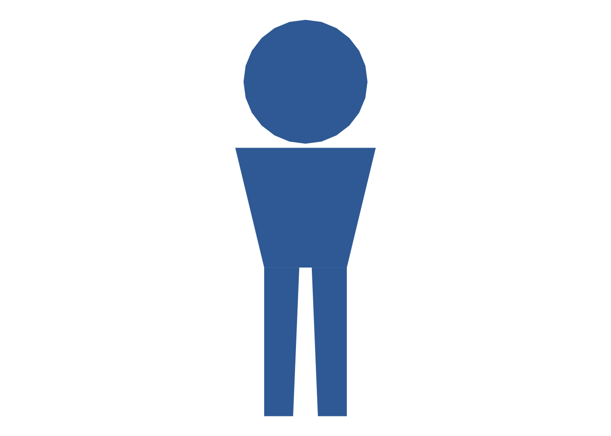
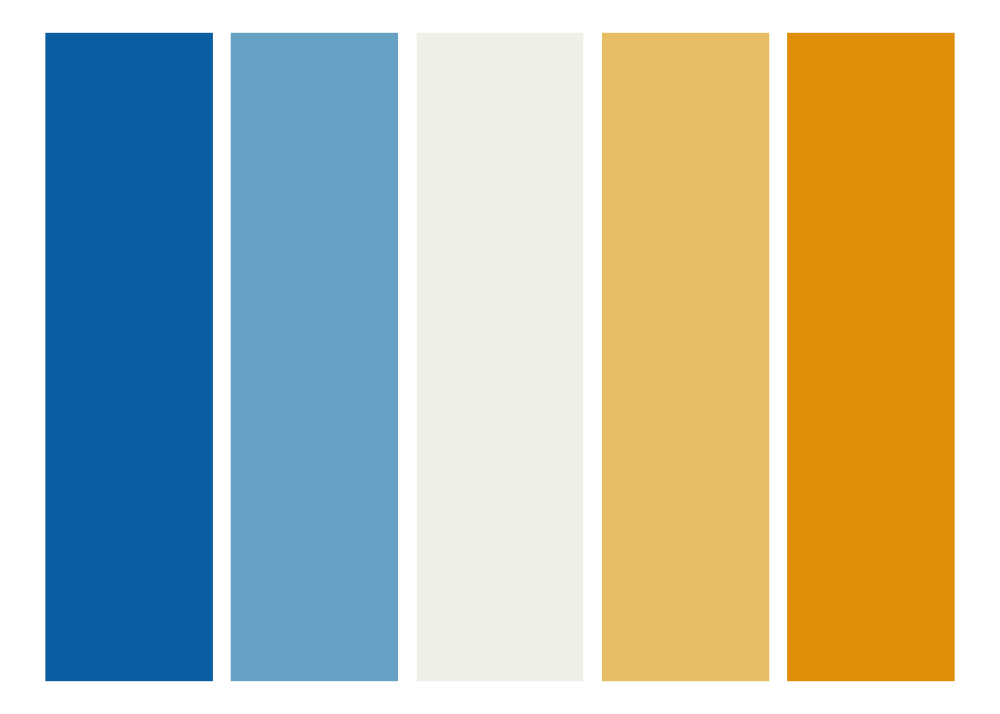
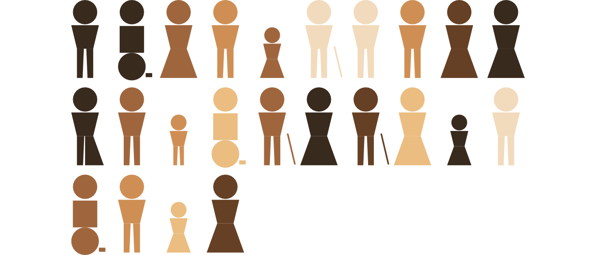
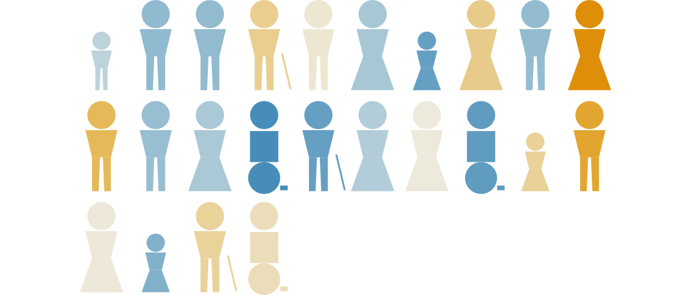

source("person-grid.R")person-grid.R: a parametrized pictogram generator
Walkthrough: how the script works, and how to use it in Quarto
Aims
person-grid.R draws “restroom-sign style” person icons — plain polygons, not an icon font or image file — and arranges any number of them into a grid. It’s the base building block behind several other figures in this book: a single icon reused by testing-sequence.R (a person at a computer) and by peer-review-workflow.R (author/editor/reviewer roles), plus two figures used directly:
- a diversity sample figure — a grid of icons varying in silhouette, age, disability, and skin tone, to make “any group of people will vary” concrete rather than abstract;
- an effect grid figure — the same grid mechanism, but with each icon’s fill colour driven by a numeric value (e.g. an effect size or score) on a diverging blue–white–orange scale, to show “people vary in how they respond” to some intervention or condition.
This document explains how the script is built, then how to call it from a Quarto chunk.
After working through it, you should be able to:
- explain how one icon’s shape, its demographic composition, and its fill colour are each decided independently, then combined only at the end;
- generate a diversity-sample grid and an effect-size (value-mode) grid of your own, with your own proportions/values;
- read the parameter quick-reference table well enough to adapt a call without re-reading the source.
Prerequisites / assumptions
- Packages:
ggplot2only (loaded by the script itself). No icon fonts or external image assets — every icon is drawn from coordinates, so it renders identically wherever Quarto builds the document. - Sourcing: standalone — nothing else needs to be sourced first. (It is, however, a dependency of
testing-sequence.Randpeer-review-workflow.R— see their own walkthroughs.) - Reader background: basic familiarity with
ggplot2(geom_polygon(),aes(),theme_void()) is assumed; no statistics background needed.
How it works: the process
Each icon is just a handful of flat shapes (head, torso, legs or wheelchair, optional cane) assembled as polygons in a local coordinate frame, then offset into a grid position. Colour and demographic composition are decided by sampling from user-specified proportions. The pipeline for building the whole grid looks like this:
flowchart LR
A["person_parts()\n(one icon's polygons)"] --> E["assemble + offset\ninto grid positions"]
B["sample_counts()\n(silhouette / age / disability mix)"] --> E
C["diverging_colors() or\nsampled skin tones\n(fill colour)"] --> E
D["choose_ncol()\n(grid shape)"] --> E
E --> F["ggplot() + geom_polygon()\n+ scale_fill_identity()"]
In short: geometry (what shape is each icon) is decided independently from composition (how many of each kind) and colour (what fill each gets), and all three are combined only at the very end when the polygon data frame is built and handed to ggplot().
Element-by-element walkthrough
Low-level geometry: circle_pts() and person_parts()
circle_pts <- function(cx, cy, r, n = 24) {
t <- seq(0, 2 * pi, length.out = n + 1)[-(n + 1)]
data.frame(x = cx + r * cos(t), y = cy + r * sin(t))
}circle_pts() is a tiny helper that turns a centre + radius into n points around a circle (used for the head, and for the wheelchair wheel). It’s deliberately generic — nothing about it is specific to drawing people.
person_parts(kind, age, disabled, scale, ox, oy) is where one icon’s shape is actually defined. It builds a named list of polygons (head, torso, legs, etc.) in a fixed local coordinate frame (head centred at x = 0, y = 1.62), then at the very end:
out <- lapply(names(parts), function(nm) {
p <- parts[[nm]]
data.frame(part = nm, x = ox + scale * p$x, y = oy + scale * p$y)
})
do.call(rbind, out)scales and offsets every part by (ox, oy) — this is the mechanism that lets the same local shape be placed anywhere in a grid (or, in testing-sequence.R, next to a monitor icon) just by changing ox/oy.
Three design choices worth knowing about, because they explain shapes you might otherwise find surprising in the rendered figure. The most distinctive is the leg silhouette, controlled by kind:
if (kind == "A") { # trouser legs: two bars with a slim gap
parts[["leg_l"]] <- data.frame(x = c(-0.20, -0.03, -0.06, -0.20),
y = c(0.72, 0.72, 0.00, 0.00))
parts[["leg_r"]] <- data.frame(x = c(0.03, 0.20, 0.20, 0.06),
y = c(0.72, 0.72, 0.00, 0.00))
} else if (kind == "B") { # skirt
parts[["legs"]] <- data.frame(x = c(-0.20, 0.20, 0.46, -0.46),
y = c(0.72, 0.72, 0.00, 0.00))
} else if (kind == "N") { # half trouser (left) / half skirt (right)
parts[["leg_l"]] <- data.frame(x = c(-0.20, -0.02, -0.05, -0.20),
y = c(0.72, 0.72, 0.00, 0.00))
parts[["legs_skirt_half"]] <- data.frame(x = c(0.00, 0.20, 0.46, 0.00),
y = c(0.72, 0.72, 0.00, 0.00))
}
NoteWhy a third silhouette, instead of just A/B?
"A" is trouser-coded (two separate leg bars with a slim gap) and "B" is skirt-coded (one flared polygon). Rather than picking one of those two as a generic “default” person, "N" is literally half of each — an inclusive, non-binary-coded silhouette, not a third stereotyped shape layered on top of the first two.
The other two choices change less structurally:
disabled = TRUEswaps the torso/legs for a single wheelchair wheel plus a footrest peg, redesigned (per a code comment in the script) as one big unbroken shape rather than several small ones, because small shapes stop reading clearly once icons are shrunk down in a large grid.age = "elder"adds a cane polygon;age = "child"doesn’t change the shape at all — it’s handled later, as an overallscalemultiplier inperson_grid(), not insideperson_parts().
one_person <- person_parts("A", "adult", disabled = FALSE)
ggplot(one_person, aes(x, y, group = part)) +
geom_polygon(fill = "#3B6EA5") +
coord_equal() +
theme_void()
Composition sampling: sample_counts()
sample_counts <- function(n, props, seed) {
stopifnot(
"`props` must have non-negative values, with at least one positive" =
all(props >= 0) && sum(props) > 0
)
props <- props / sum(props)
set.seed(seed)
raw <- props * n
counts <- floor(raw)
remainder <- n - sum(counts)
if (remainder > 0) {
order <- order(-(raw - counts))
for (i in seq_len(remainder)) {
idx <- order[((i - 1) %% length(order)) + 1]
counts[idx] <- counts[idx] + 1
}
}
sample(rep(names(props), counts))
}Given target proportions (e.g. c(adult = 0.70, child = 0.15, elder = 0.15)) and a grid size n, this turns proportions into exact integer counts using the largest-remainder method (the same allocation method used for apportioning seats to parties in some electoral systems): take the floor of each proportion * n, then hand out the few leftover icons to whichever categories had the largest fractional remainder. This hits the requested mix as closely as integers allow, rather than independently sampling each icon (which could, by chance, give you 0 children out of 60 even at child = 0.15). The final sample() call shuffles the result so icons of the same kind aren’t clumped together in the grid.
sample_counts(10, c(adult = 0.7, child = 0.15, elder = 0.15), seed = 1) [1] "child" "adult" "adult" "adult" "adult" "adult" "adult" "elder" "adult"
[10] "child"
Notedisabled_prop = 0 is fine
The stopifnot requires at least one positive proportion overall, but zero is allowed for individual categories — so disabled_prop = 0 (the default in some contexts) works fine: that category just gets 0 of the n icons, not an error.
Colour: diverging_colors()
diverging_colors <- function(value, neg = "#0072B2", mid = "#F2F1EC", pos = "#E69F00") {
span <- max(abs(value), 1e-9)
tt <- value / span # -1 .. 1, 0 = null
ramp_lo <- grDevices::colorRamp(c(neg, mid))
ramp_hi <- grDevices::colorRamp(c(mid, pos))
to_hex <- function(m) grDevices::rgb(m[, 1], m[, 2], m[, 3], maxColorValue = 255)
vapply(tt, function(t) {
if (t <= 0) to_hex(ramp_lo(t + 1))
else to_hex(ramp_hi(t))
}, character(1))
}This is the colour engine behind person_grid()’s mode = "value" — e.g. colouring icons by an effect size or score. It’s a symmetric, diverging scale: 0 is always treated as the reference/“null” point (light, near-white), regardless of where your data happen to sit, and the two endpoints (default blue/orange — the Okabe–Ito colour-blind-safe palette, not a red/green or red/blue scale) are reached only at max(abs(value)).
NoteThe scale is set by whichever value is furthest from zero
A value vector of c(-1, 3) will not make -1 look strongly negative, because 3 is furthest from zero and so sets the scale — -1 ends up only a third of the way to the “strongly negative” endpoint. Worth checking if your values aren’t already roughly symmetric around zero.
vals <- c(-2, -1, 0, 1, 2)
data.frame(value = vals, fill = diverging_colors(vals)) |>
ggplot(aes(x = value, y = 1, fill = fill)) +
geom_tile(width = 0.9, height = 0.9) +
scale_fill_identity() +
theme_void()
Automatic grid shape: choose_ncol()
choose_ncol <- function(n, dx, dy, aspect) {
ncols <- seq_len(n)
nrows <- ceiling(n / ncols)
grid_ratio <- (ncols * dx) / (nrows * dy)
ncols[which.min(abs(log(grid_ratio / aspect)))]
}Given n icons and a target width:height aspect ratio (default 16:9), this brute-forces every possible number of columns from 1 to n and picks whichever makes the resulting grid’s bounding box closest to that aspect ratio — so the figure fills a slide with minimal leftover margin, without you having to hand-pick ncol for every n. It compares ratios on a log scale, so “twice too wide” and “twice too tall” count as equally bad, rather than the search being biased toward wide grids.
Putting it together: person_grid()
This is the function you actually call. It:
- Resolves
ncol(viachoose_ncol()if left as"auto"). - Samples silhouette/age/disability composition via
sample_counts(). - Resolves fill colour — either sampled skin tones (
mode = "diversity") ordiverging_colors(value)(mode = "value"). - Loops over
1:n, computing each icon’s grid row/column (and henceox/oy), callingperson_parts()for its shape (children are drawn atscale = 0.65), and stamping on that icon’s fill colour. - Row-binds every icon’s polygons into one data frame and builds a single
ggplot()call — onegeom_polygon()for the whole grid, notnseparate layers, grouped by a per-iconpoly_id. - Also returns
meta(a tidy one-row-per-icon summary) andalt_text(a plain-language description of the composition) — see the integration section below for howalt_textfeedsfig-alt.
diversity_demo <- person_grid(n = 24, seed = 11)
diversity_demo$plot
set.seed(2716)
value_demo <- person_grid(n = 24, mode = "value", value = rnorm(24, mean = 0, sd = 1.2))
value_demo$plot
Quarto usage / integration
Minimal setup-chunk line:
source("person-grid.R")Real usage from doing-being-science.qmd (the diversity-sample slide):
```{r}
#| label: fig-diversity-sample
#| fig-cap: "The people in any group will vary in many ways: just look around you"
#| fig-alt: !expr diversity_grid$alt_text
#| fig-width: 8
#| fig-height: 4.5
diversity_grid <- person_grid(n = 125, seed = 11)
diversity_grid$plot
```And the value-mode / effect-size variant:
```{r}
#| label: fig-effect-grid-demo
#| fig-cap: "People vary and how conditions or interventions affect us will vary: from strongly negative (dark blue) to null (near-white) to strongly positive (dark red) impacts"
#| fig-alt: !expr effect_grid$alt_text
#| fig-width: 8
#| fig-height: 4.5
set.seed(2716)
effect_grid <- person_grid(n = 60, mode = "value", value = rnorm(60, mean = 0, sd = 1.2))
effect_grid$plot
```Two things worth keeping in mind when reusing this pattern:
fig-altis set via!exprto pull the already-computedalt_textfield out of the object returned byperson_grid()— so the alt text always matches what was actually sampled, rather than being hand-written and liable to drift out of sync.- Because
coord_equal(expand = FALSE)is used internally, the figure’s panel is exactly the icons’ bounding box with no extra margin — setfig-width/fig-heightto roughly match the grid’s aspect ratio so Reveal/HTML doesn’t stretch it oddly.
Parameter quick reference
| Parameter | Default | Meaning |
|---|---|---|
n |
30 |
Number of icons. |
ncol |
"auto" |
Icons per row; "auto" picks the best fit to aspect. |
aspect |
16/9 |
Target width:height ratio used only when ncol = "auto". |
comp_kind |
c(A=.45, B=.45, N=.10) |
Silhouette mix (trouser / skirt / half-half). |
comp_age |
c(adult=.70, child=.15, elder=.15) |
Age-presentation mix. |
disabled_prop |
0.12 |
Proportion drawn with the wheelchair silhouette. |
mode |
"diversity" |
"diversity" (sampled skin tone) or "value" (diverging fill from value). |
skin_tones |
6 hex colours | Palette sampled from when mode = "diversity". |
value |
NULL |
Numeric vector, length n; required when mode = "value". |
seed |
1 |
Reproducibility seed for every sampling step. |
dx, dy |
1.15, 2.15 |
Icon spacing (horizontal, vertical). |
Common errors
| Message | Likely cause |
|---|---|
props` must have non-negative values, with at least one positive` | A composition argument (`comp_kind`, `comp_age`, or the derived `disabled_prop` pair) summed to zero — every category was set to 0. At least one must be positive. | |valuemust be supplied and length n when mode = 'value' |
mode = "value" was set but value was left NULL, or its length didn’t match n. |
| Icons overlapping or clipped at the edges | dx/dy too small for the chosen ncol, or aspect far from the actual figure’s fig-width/fig-height ratio. |
Exercises
- Change
comp_kindinperson_grid(n = 24, seed = 11)toc(A = 0.1, B = 0.1, N = 0.8)and re-render. What changes, and what stays the same? - Set
disabled_prop = 0and re-render. Confirm it no longer errors (per thesample_counts()discussion above) and check thealt_textupdates to match. - Re-run the value-mode demo with
value = rnorm(24, mean = 2, sd = 1.2)(note the shifted mean) instead ofmean = 0. Does-2still look as “strongly negative” as it did before? Explain why, referring to howdiverging_colors()picks its scale. - Try
ncol = 4instead of"auto"on a grid ofn = 24and compare the result to the auto-chosen layout. When might you want to override the automatic choice? - Write a one-paragraph
fig-altdescription by hand for amode = "value"grid, then compare it to thealt_textthe function generates automatically. What would you add or change?
See also
- testing-sequence-walkthrough.qmd — reuses
person_parts(),sample_counts(), anddiverging_colors()to build a “person at a computer” icon. - peer-review-workflow-walkthrough.qmd — reuses the composite icon from
testing-sequence.R(and so, transitively, this script) for the author/editor/reviewer roles.